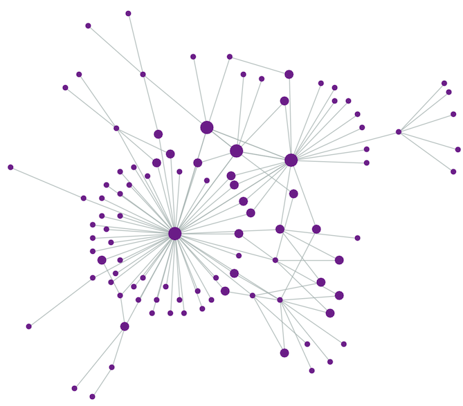
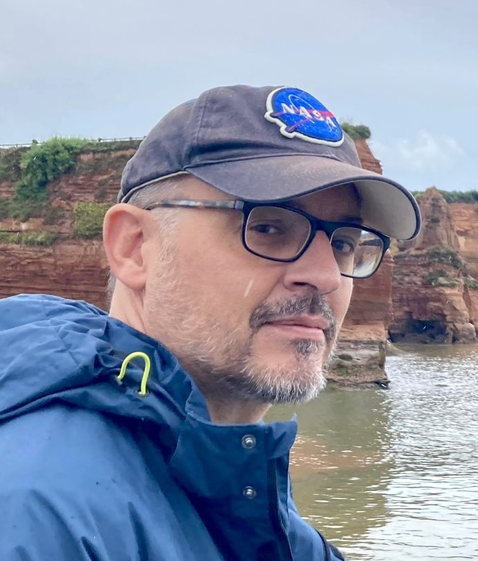
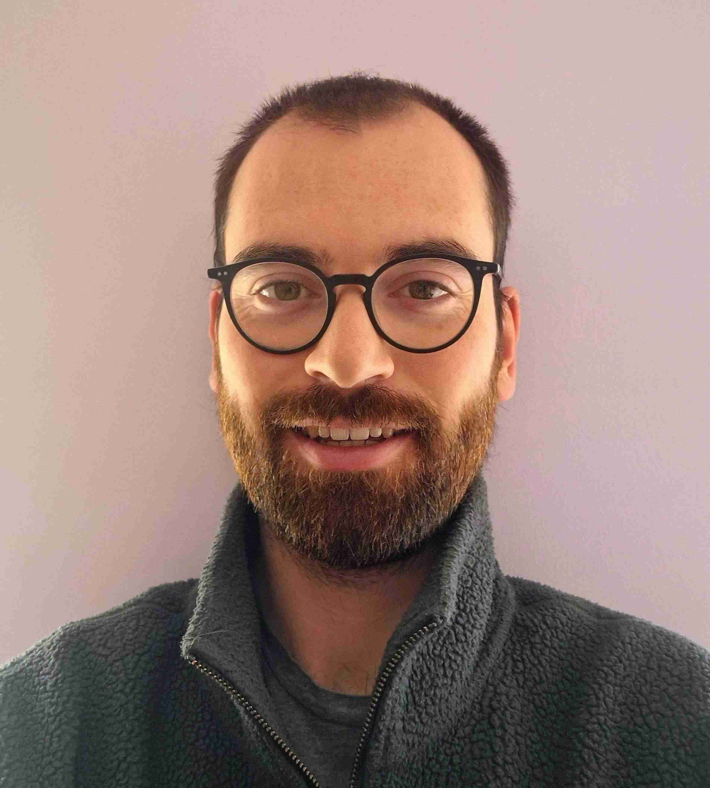
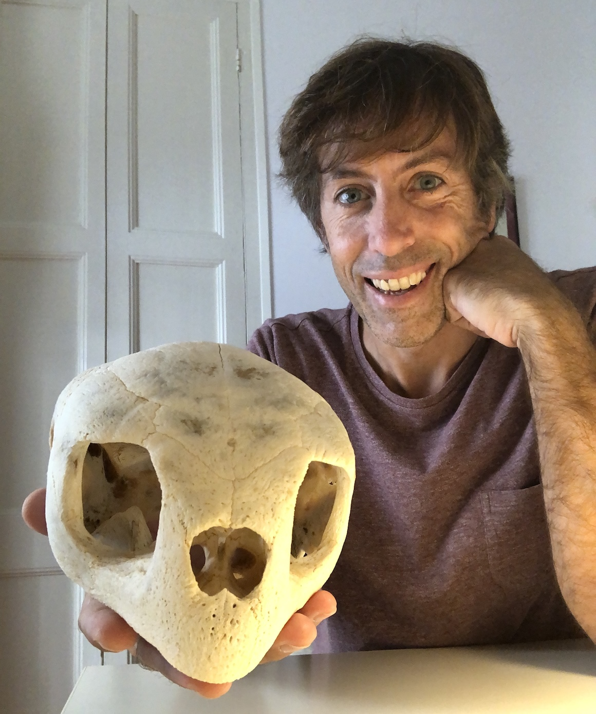
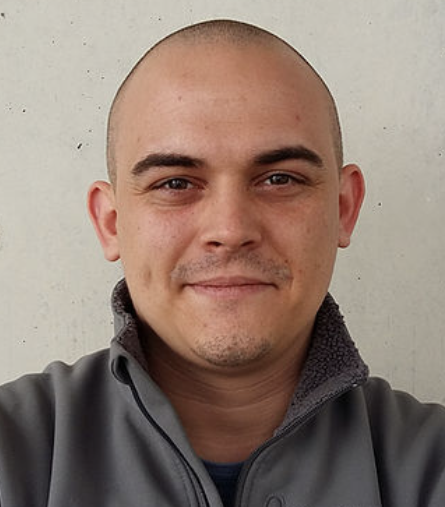
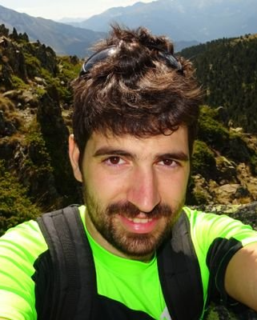
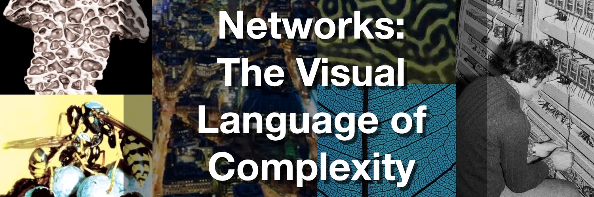

The Evolution of Networks Lab belongs to the Institute for Evolutionary Biology (IBE). Dr. Sergi Valverde, a CSIC scientist, leads the group with a focus on discovering universal evolutionary principles in both natural and artificial networks. Our lab specializes in complex systems, complex networks, ecology, and cultural evolution.
We investigate how innovations emerge and evolve, applying a complex network perspective to understand the evolution of culture and technology. Our work involves empirical studies and computational models, including analyzing millions of patents to study technological evolution. We aim to extend evolutionary theory beyond biology into technology and culture.

Dr. Sergi Valverde is a complex systems scientist at IBE, exploring the origins of innovations in technology and nature. With a background in computer science and physics, Dr. Valverde applies evolutionary theory to non-biological domains, including social evolution.

Guillem Güell Paule is a computational researcher working at the intersection of image analysis, computer vision, and morphometrics. He develops methods to quantify and compare biological shape from images, drawing on his training in physics, complex systems, biophysics, and data science.

Dr. Pere Renom is a postdoctoral researcher with a focus on macroevolution and science communication. He holds a PhD in Biomedicine and has published widely in both academic and public domains. Renom combines his experience in biology, philosophy, and paleogenomics with a career in science reporting. "Is the tape of life replayable or not?" That is the question he would like to solve.

Dr. Salva Duran-Nebreda, a biotechnologist and complex systems researcher, studies major transitions in evolution, with a particular interest in emergent properties in ecosystems and societies. His research spans synthetic biology, EvoDevo, and ecology, focusing on the shifting nature of individuality in evolutionary systems.

Dr. Blai Vidiella is a postdoctoral researcher at the Station d’Écologie Théorique et Expérimentale (CNRS), where he collaborates with José M. Montoya on the BIOcean5D project. His current work investigates the relationship between biodiversity and ecosystem function in marine ecosystems. Previously, he was a postdoctoral researcher at the Evolution of Networks Lab, contributing to the MPA4Sustainability Biodiversa project on marine protected areas, ecological networks, and their links with human societies.

This chapter reflects on two decades of research in complex networks and offers our perspective on how network science has developed as a visual and conceptual language for understanding complexity. Drawing on work across biological, ecological, technological, and cultural systems, it highlights the ideas and questions that continue to shape our research. Read the chapter (PDF).